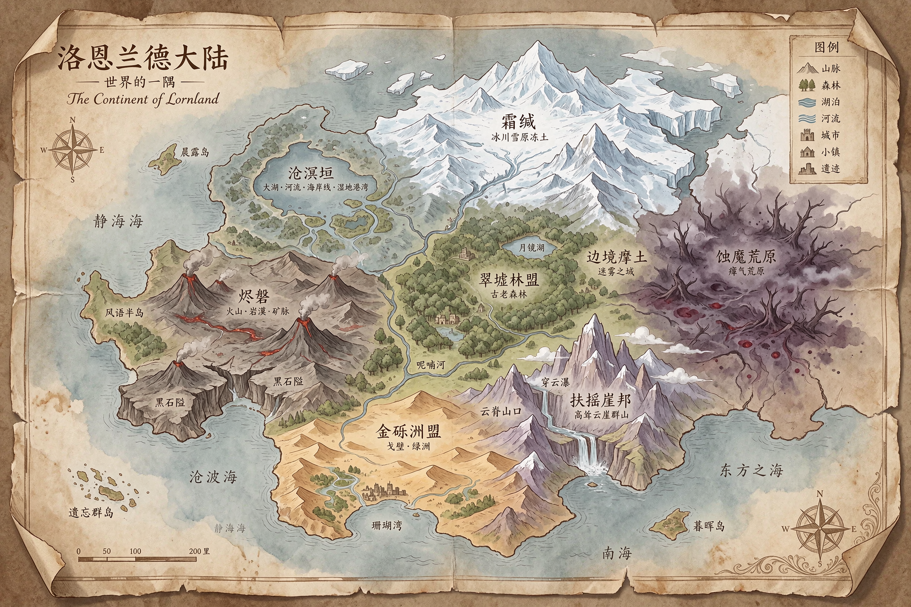

【大陆格局：洛恩兰德诸国】
洛恩兰德是一片辽阔而地貌繁复的大陆，自绵长的西海岸到荒芜的东部边境，海洋、湖泊、密林、高原、火山荒漠、冰封山域依次铺展。诸多智慧种族在此繁衍生息，经过漫长岁月的磨合，各族在法理层面拥有平等的生存权利，保有完整的氏族与文明。只是纸面的平等无法抹平世代积累的隔阂，偏见、猜忌与刻板印象依旧在民间流传，不同国度对待异族的包容程度，也天差地别。诸国之间有通商盟约、互通信使，也会为灵脉、矿脉、海岸线的归属产生摩擦，大规模的战争已经沉寂许久，但暗流始终不曾停歇。
沧溟垣：故事的核心舞台，国土同时囊括内陆巨型淡水湖与绵长的西海岸，境内水系纵横，港湾星罗棋布。它是这片大陆上异族混居程度最高的国度，王室行事审慎内敛，表面维持温和中立的对外姿态，暗中持续开展魔法与古代圣物的研究。沧溟的学者既钻研传统魔法，也尝试将魔法原理与现世工艺结合，走出独属于本国的发展道路。赛斯族群大多定居在王国所辖海域与内湖深处，很多赛斯族人会定期上岸，与陆地种族交易物资。
扶摇崖邦：坐落于大陆东南侧的云崖群山与原始森林之中，是萨凯唯最主要的聚居地。房屋顺着崖壁、树冠搭建，借助风的力量构筑浮空栈道。公国崇尚自由，厌恶繁复的王权束缚，没有严苛的征兵制度。御风术是他们代代相传的拿手魔法，族人多作为信使、游商、高空斥候往来大陆各处。他们愿意和沧溟垣通商，却对王室的秘密计划保持距离，不愿被卷入未知的风险之中。
翠墟林盟：精灵传统故土，由数十个精灵氏族共同缔结而成，不设世袭君主，由各族长老组成议会共同裁决大事。整片国度被古老的原始林地包裹，地下交错着自然灵脉，草木魔法、疗愈魔法与幻术在此发展到极致。精灵对外界态度偏于保守，不主动向外扩张，也很少插手他国纷争，但一旦灵脉、古树圣地遭到破坏，所有氏族便会放下分歧，一致对外。
烬磐：扎根大陆西侧火山与岩漠地带，土地灼热，地下遍布矿脉。此地民风刚硬，崇尚力量与秩序，律法严明，锻造与岩土魔法闻名整个洛恩兰德。烬磐距离东部边境魔物活动区域更近，世代都要直面游荡魔物，对魔王章噬靥的存在早有认知，常年维持着规模庞大的守备军队。
霜缄：大陆北端的冰封冻土国度，常年风雪呼啸，冻土之下藏着古老冰系魔法传承。这里是雷杰艾斯的家园，生存环境严酷，族人坚韧寡言，擅长在暴雪与低温环境下隐蔽行动。领邦的势力松散，以部落联盟的形式维系，很少参与南方诸国的纷争。
金砾洲盟：大陆南部的戈壁绿洲集群，由一个个独立绿洲城邦联合而成，商贸极为繁盛。这里是狐裔半人的主要聚集地，擅长交涉、幻术、潜行，往来商队、情报贩子大多在此落脚。城邦之间利益为先，盟约随时可以更改，是大陆上消息流通最快的地方。

【智慧种族】
原生古老种族
精灵：洛恩兰德最古老的原生种族之一，寿命悠长，感知力远超其余种族，天生与自然魔力共鸣。绝大多数精灵身形轻盈，耳尖修长，没有羽翼，精通草木、幻术、疗愈类魔法。他们学习魔法的节奏缓慢，但是根基扎实，魔力续航能力极强，对灵脉流动格外敏感。精灵重视血脉与氏族传统，对自身的族群特征有着很深的执念。
人类：大陆分布最广、适应性最强的种族，没有与生俱来的魔法天赋加成，也没有强悍的肉身天赋，但胜在繁衍速度快、学习能力灵活。人类的发展路线十分多元，有人潜心钻研魔法，有人投身工艺锻造，有人从政从军。在各个王国之中，人类都占据不小的比例，也是推动诸国之间贸易、文化交融的重要群体。
半人族群（人与异兽血脉交融的族群）
赛斯（海洋半人）：栖息于深海、海湾、大型内湖之中的海洋类半人，个体特征各不相同，部分族人长着透明鱼鳍、指间薄蹼，瞳孔可以适应无光的深水环境，能够承受深海高压。他们天生和水元素亲和，魔力控制力是独一份的天赋，不需要冗长咒语与繁复仪式，就能把最简单的水系魔法放大到极具破坏力的程度。赛斯聚落十分看重名望，族内的天才会被全聚落敬重。他们性情大多直白坦率，不擅长复杂的权谋算计，渝纪便属于赛斯一族。
萨凯唯（鸟类半人）：长有羽翼的半人种族，翅膀羽毛色彩丰富，羽翼形态随血脉差异有所区别，飞行是他们与生俱来的本能。他们精通御风魔法，视野开阔，擅长高空侦查、远距离奔袭。长久以来，在大陆大众的固有印象里，“长翅膀”几乎等同于萨凯唯，这也是羽绪常常被误认成萨凯唯的根源。萨凯唯厌恶束缚，很多族人一生都在四处游历。
洛克隆（石裔半人）：多定居黑石皇国的火山岩区，血脉源自大地岩土生灵。身躯比普通人类粗壮厚重，皮肤带着淡淡的岩石肌理，耐高温、抗冲击，物理抗性极强。他们很难驾驭精巧的幻术与轻灵魔法，但是岩土、熔岩类魔法得心应手，锻造、采石技艺冠绝大陆。岩裔性格沉稳固执，极其看重承诺，一旦立下约定，便不会轻易背弃。
雷杰艾斯（雪兽半人）：凛霜领邦的主体族群，身上带着淡淡的霜色绒毛，耳尾似雪狐或者雪狼，耐寒能力极强，在暴风雪中也能保持清醒。他们擅长冰系魔法、隐匿追踪，感官敏锐，适合在雪原伏击。冰裔部落的生存资源稀缺，族人彼此之间抱团，对外人保持警惕，不轻易接纳外来者。
狐裔（狐族半人）：主要聚居在沙棘城邦联盟，耳尾保留狐类特征，样貌灵巧，心思活络。他们擅长幻术、魅惑类魔法，潜行、打探情报的能力出众，天生擅长察言观色与谈判交涉。大量狐裔半人从事商队护卫、情报掮客、信使这类工作，在各个城邦之间流转。
牧西格（羚裔半人）：多栖息在大陆中部辽阔的草原地带，头顶生有弯曲的羚角，四肢强健，耐力出众，擅长长途奔跑。他们亲近风与大地的温和魔法，大多以游牧为生，崇尚自然节律，性格温和，不喜争斗，擅长驯养各类野兽。草原上的牧蹄部落松散自治，很少主动卷入诸国纷争。
【魔力与圣物体系】
魔力潜藏在世间万物之中，流淌在所有生灵的血脉、草木、山石与流水之内。天赋决定了一个人魔力储量的上限，而对魔力的掌控力，决定力量最终能发挥出怎样的效果。有些人身负庞大魔力，却难以收敛，稍有不慎便会失控；有些人魔力储量平平，依靠极致细腻的控制，依旧可以将简单魔法发挥出惊人的作用。魔法流派繁多，水系、风系、草木、岩土、寒冰、幻术、疗愈各自拥有独立传承，不同种族会优先发展适配自身血脉特质的魔法。
圣物是一类散落在大陆各处的法器，它们各自拥有着常人难以想象的强大力量与特性。没人知道它们从何而来，基本的研究发现他们的年代非常久远，目前推测圣物可能都是前文明的产物，这引起很多人对前文明的遐想，但当前没有对前文明的任何文字记载。因为绝大多数的圣物处于无人的状态，他们很多都意外被魔物掌握，因此圣物周围常常会形成大面积的魔物聚集地，这使得回收圣物变得极为困难，但它们依然吸引了很多人前来冒险。
【边境：魔王章噬靥与魔物生态】
洛恩兰德大陆的最东侧，是一片被荒芜瘴气笼罩的边境地带，土地贫瘠，灵脉扭曲，大量魔物在此游荡栖息。这片区域的主宰便是魔王章噬靥，一名力量极其强大的人形魔物。她拥有独有的吞噬权能，可以掠夺、吸收其他生灵的魔力，不断填补自身、壮大力量。长久以来，她固守在边境瘴土之内，和大陆诸国维持着微妙的平衡，不会轻易越过边界侵袭王国领地。
魔物并非全部都是章噬靥的从属，边境魔物种类繁杂，有依靠本能游荡的野兽型魔物，也有诞生自我意识、拥有简单智慧的魔物。在很长一段时间里，大部分魔物不会主动深入内陆。只是近些日子，章噬靥的行动轨迹变得难以预判，边境魔物的活动频率慢慢上升，原本稳定的边界平衡开始出现裂痕。这份潜藏的危机，也是澜汐王国秘密组织精锐选拔的根源。